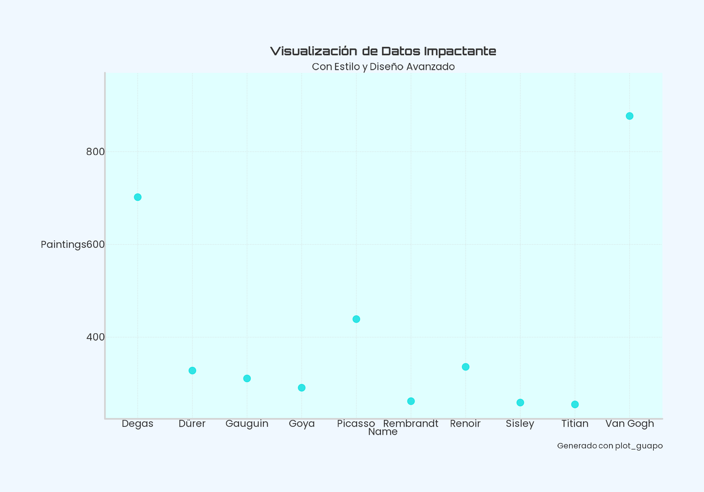
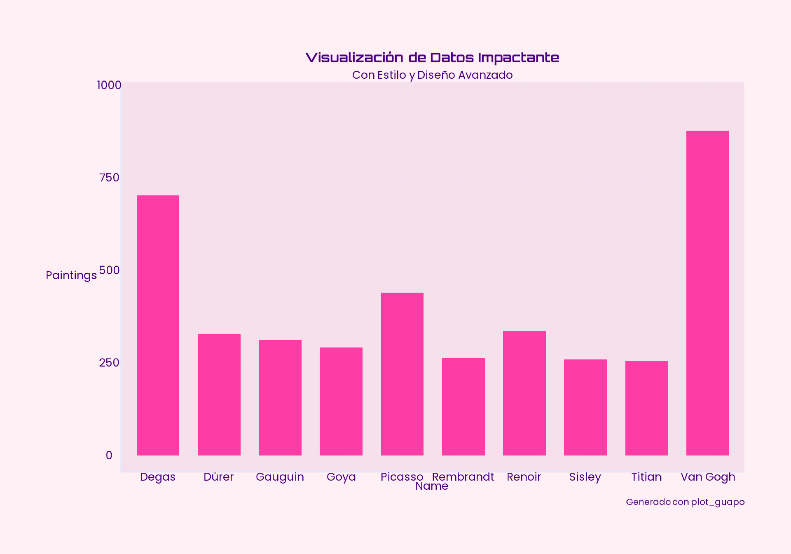
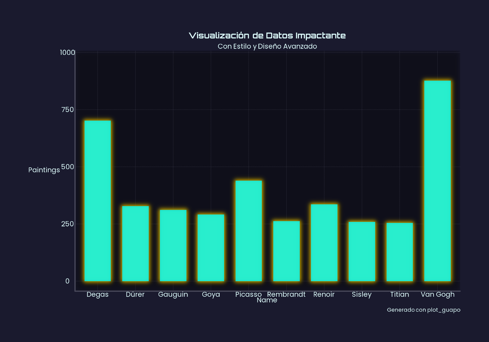

Plot guapo
guapo.Rmd
data <- structure(list(name = c("Van Gogh", "Degas", "Picasso",
" Renoir", "Dürer", "Gauguin", "Goya",
"Rembrandt", "Sisley", "Titian"), genre = c("Post-Impressionism",
"Impressionism", "Cubism", "Impressionism", "Northern Renaissance",
"Symbolism,Post-Impressionism", "Romanticism", "Baroque", "Impressionism",
"High Renaissance,Mannerism"), paintings = c(877L, 702L, 439L,
336L, 328L, 311L, 291L, 262L, 259L, 255L)), class = "data.frame", row.names = c(NA,
-10L))
load_all_fonts() #Esto puede demorar unos segundos
#> Todas las fuentes de los estilos de artistas han sido cargadas.plot_guapo
gguapo provee una función genérica para aplicar un
estilo limpio y elegante a tus gráficos, con distintos parámetros que se
pueden ajustar. La salida predeterminada luce así:
plot_guapo(data, name, paintings)
fill_var/color_var + plot_type
plot_guapo(data, name, paintings, fill_var = genre, plot_type = "column")palette_name + dark_mode
plot_guapo tiene algunas variantes de paletas para utilizar. Las opciones son: neoflash, glamour, soft_futuristic y bold_minimal. Además, con el dark_mode se puede cambiar la estética general a algo oscuro/claro.
plot_guapo(data, name, paintings, plot_type = "column", palette_name = "glamour")
plot_guapo(data, name, paintings, plot_type = "column",
palette_name = "soft_futuristic", dark_mode = T)highlight_values
Una opción útil es resaltar algún dato, para lo cual podemos indicar el valor del eje x que nos interesa destacar.
plot_guapo(data, name, paintings, plot_type = "column", dark_mode = T,
highlight_values = c("Picasso"))Otros
Hay múltiples parámetros para ajustar. Por ejemplo, sombras, brillo y difuminación.
plot_guapo(data, name, paintings, plot_type = "column", dark_mode = T,
apply_shadow = T, apply_glow = T, apply_blur_background = T)mapa_guapo
plot_guapo acepta objetos sf para hacer mapas, sin
embargo, una alternativa estilística es usar mapa_guapo que
tiene un enfoque distinto.
# Datos de los polígonos en WKT
wkt_poligonos <- c(
"POLYGON ((0 0, 1 0, 1 1, 0 1, 0 0))",
"POLYGON ((2 2, 3 2, 3 3, 2 3, 2 2))"
)
# Crear objetos sf a partir de WKT
geometrias <- sf::st_as_sfc(wkt_poligonos, crs = 4326) # Asignamos el CRS aquí
# Crear un dataframe con atributos
df_atributos <- data.frame(
nombre = c("Cuadrado A", "Cuadrado B"),
valor = c(10, 25)
)
# Unir las geometrías con los atributos para formar el sf dataframe de ejemplo
sf_prueba_cuadrados <- sf::st_sf(df_atributos, geometry = geometrias)
mapa_guapo(data = sf_prueba_cuadrados, fill = valor)
Aplicado a un objeto geográfico real se vería: